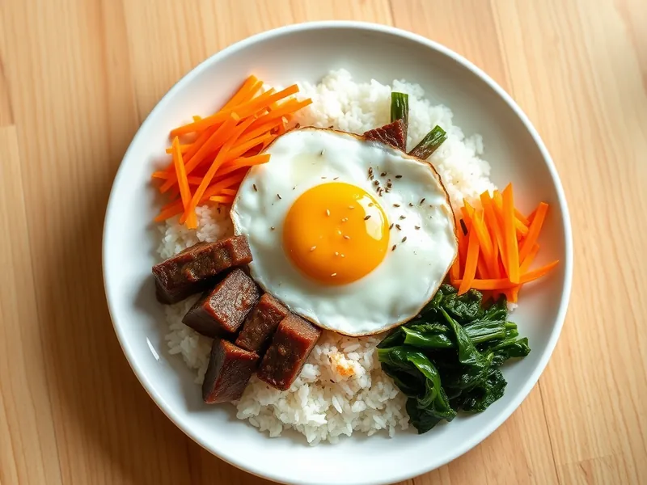

Пибимпап - рис с говядиной, овощами и яйцом по-корейски
Миска риса с жареной говядиной в сладком соевом маринаде, морковью, шпинатом и глазуньей
30 мин2 порц.714 ккал на порциюБ 34 · Ж 34 · У 68Азиатская кухня
Открыть в приложении: порции, таймеры, список покупок
Продукты на 2 порц.
- Рис150 г
- Вода300 мл
- Говядина200 г
- Морковь1 шт
- Шпинат100 г
- Яйцо куриное2 шт
- Соевый соус2 ст. л.
- Сахар1 ч. л.
- Чеснок1 зуб.
- Кунжутное масло2 ч. л.
- Растительное масло1,5 ст. л.
- Соль1 щеп.
- Кунжут по желанию1 ч. л.
Как готовить
- Промойте рис, залейте 300 мл воды и варите под крышкой на слабом огне 15 минут, затем дайте постоять.
- Говядину нарежьте тонкими полосками, смешайте с соевым соусом, сахаром и тёртым чесноком и оставьте на 10 минут. Морковь нарежьте тонкой соломкой.
- Обжарьте морковь на капле масла на среднем огне 2 минуты и выложите. На той же сковороде прогрейте шпинат 1 минуту, пока не опадёт, посолите и сбрызните кунжутным маслом.
- Разогрейте сковороду на сильном огне с маслом и обжарьте говядину 3-4 минуты, пока маринад не превратится в густую глазурь.
- На оставшемся масле пожарьте глазунью 3 минуты, чтобы белок схватился, а желток остался жидким.
- Разложите рис по мискам, сверху секторами морковь, шпинат и говядину, в центр яйцо. Посыпьте кунжутом и перед едой всё перемешайте.
Совет. Мясо легче нарезать тонко, если подержать его 15-20 минут в морозилке, пока режете овощи и варится рис.